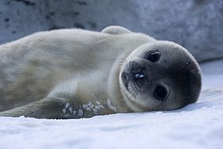
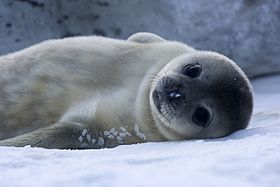

testo sobre foca
testo sobre foca testo sobre foca
As focas são mamíferos da família dos focídeos, super-família dos pinípedes, adaptadas à vida marinha. O corpo de uma foca é hidrodinâmico, semelhante a um torpedo, com os membros posteriores e anteriores em forma de nadadeira.As focas são mamíferos da família dos focídeos, super-família dos pinípedes, adaptadas à vida marinha. O corpo de uma foca é hidrodinâmico, semelhante a um torpedo, com os membros posteriores e anteriores em forma de nadadeira.As focas são mamíferos da família dos focídeos, super-família dos pinípedes, adaptadas à vida marinha. O corpo de uma foca é hidrodinâmico, semelhante a um torpedo, com os membros posteriores e anteriores em forma de nadadeira.As focas são mamíferos da família dos focídeos, super-família dos pinípedes, adaptadas à vida marinha. O corpo de uma foca é hidrodinâmico, semelhante a um torpedo, com os membros posteriores e anteriores em forma de nadadeira.
As focas são mamíferos da família dos focídeos, super-família dos pinípedes, adaptadas à vida marinha. O corpo de uma foca é hidrodinâmico, semelhante a um torpedo, com os membros posteriores e anteriores em forma de nadadeira.
As focas são mamíferos da família dos focídeos, super-família dos pinípedes, adaptadas à vida marinha. O corpo de uma foca é hidrodinâmico, semelhante a um torpedo, com os membros posteriores e anteriores em forma de nadadeira.
As focas são mamíferos da família dos focídeos, super-família dos pinípedes, adaptadas à vida marinha. O corpo de uma foca é hidrodinâmico, semelhante a um torpedo, com os membros posteriores e anteriores em forma de nadadeira.